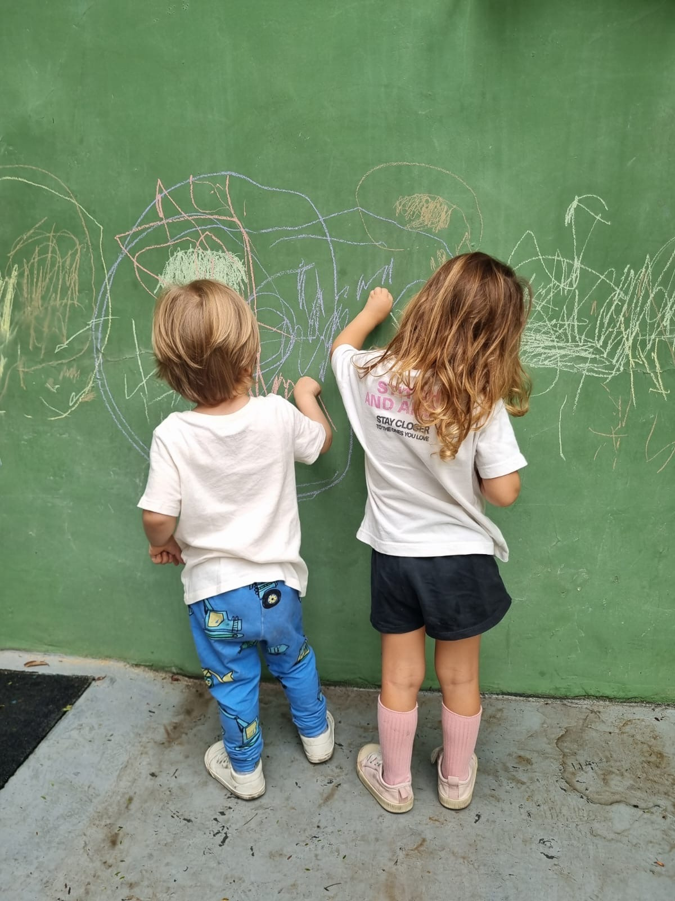
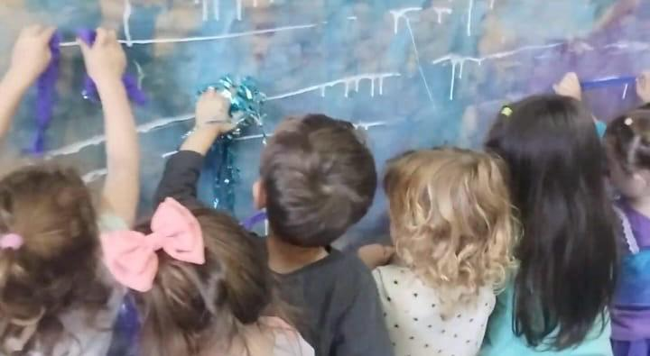

El clima del Jardín es de alegría, juego, aprendizaje creativo y convicción afectiva. Lo logramos a través de una comunicación cotidiana y cercana entre las familias y los/las docentes. Nos proponemos trabajar por la convivencia pacífica, la tolerancia, el respeto por las diferencias y la superación de las pequeñas dificultades, a partir del fortalecimiento de la autonomía y la comunicación.
En Jardín, servimos una merienda que incluye agua, té con leche y galletitas integrales. No fomentamos el consumo de gaseosas o jugos saborizados y pedimos a las familias que no traigan golosinas para compartir en las meriendas.
Nuestras familias suelen mandar tortas caseras, frutas secas o galletitas en cumpleaños o situaciones de festejo del Jardín. En los almacenes de Sala de 4 y 5 años, los chicos pueden traer sus viandas u optar por la comida de la Escuela.
Para los almorzadores de Sala de 2 y 3 años pedimos que cada familia envíe su vianda, así facilitamos la experiencia de comer juntos en la escuela a tan tempranas edades. En ambos casos, almuerzan acompañados y asistidos por sus maestros, quienes intercambian con las familias cualquier información necesaria que colabore a lograr un muy buen momento de alimentación.

Periódicamente renovamos las carteleras de la vereda para que vecinos y familias puedan disfrutar de algunas de las producciones de los chicos y chicas de nuestro Jardín. ¡No se las pierdan!
Allí vamos contando las cosas que aprendemos, los pasos que nos descubrimos, lo que nos interesa, los paseos que hacemos y las actividades que nos gustan. ¡Pasén a mirarlas!


